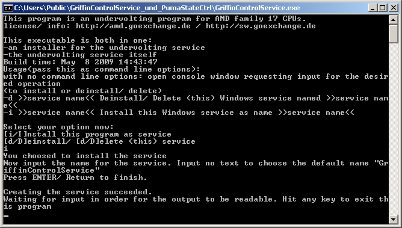
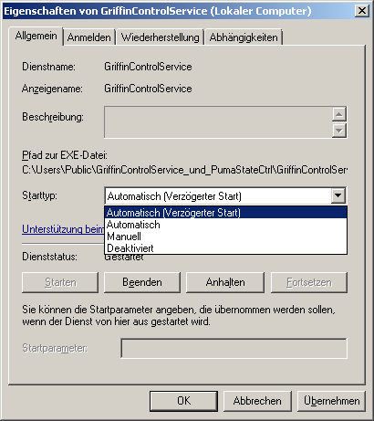
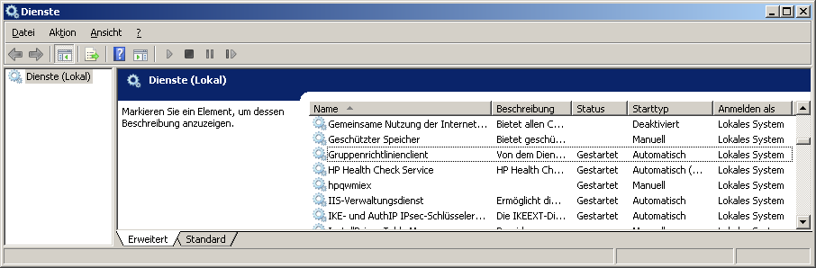
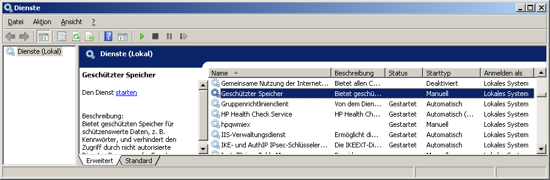
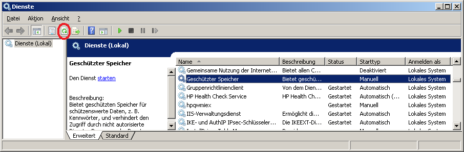
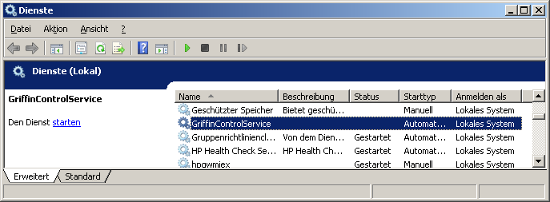
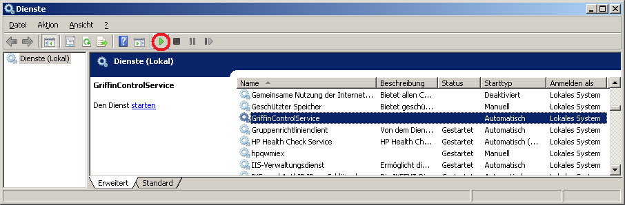
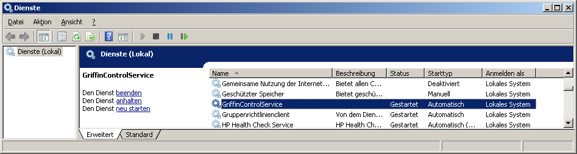

Installing
and starting the Griffin (AMD family 17) undervolting service.
last edit: 05th Sep 2009 GMT+1
Table
Of Contents
- Installation
- Additionally needed files
for setting the CPU voltage
- Troubleshooting
- Prerequisites
to start the service before the next reboot
- How to start the
service manually
1. Installation
The
installation of the service is very easy: start the program (usually by double
clicking on it).

The created Windows service now refers to path of the service's executable file.
If you move the service executable and want it to be runnable you have to either:
- change the service's path (must be saved somewhere in the system registry or somewhere else; don't know how to change it)
- deinstall the service and install it again
2. Additionally
needed files for setting the CPU voltage
- GriffinControl_config.xml
: (exactly this file name); contains the voltages
to set etc.
- CPU access driver file
- DLL
file that calls the driver
3. Troubleshooting
- Windows boot problems:
If Windows can't boot because e.g. the voltages are set too low start Windows in safe mode:
Press F8 key at Windows boot. In safe mode the service is not started.
So either remove automatic service start or change the values in the config file. - the service hangs
set the start type to "delayed
start" if the service hangs (and creates a Windows log event):
- start the service control manager
- context
menu on "GriffinControlService" -> select "properties
- select "delay start" (topmost/ first entry of the
pulldown list) :

4.
Prerequisites to start the service before the next
reboot
Note:
- this
chapter should be only necessary if the service control manager was not
open before end of installing the service.
- The
service should be automatically started after a reboot. So
you only need to read the following text if you want to start
it
before the next reboot and you do not know how to start Windows(R)
services.
1.
To start the services control manager either:
- via Windows' (R) graphical user interface:
- Start
menu->
- control panel->
- [maintainance/management/administration]
->
- start "services" (to start:
double click / mark and hit "return" key etc.)
- open
a shell / system prompt (e.g. Windows' "cmd.exe"):
- press
"Windows"-key & the "r"-key at the same time
- or
start menu->"run..."
open: "cmd"
- possibly
you have to change
current dir to "%WINDIR%/System32"
(e.g. "C:\WINDOWS\System32" )
- cmd.exe:
e.g. type "cd C:\WINDOWS\System32" and press "Enter"
- cmd.exe:
type "mmc
services.msc" and press "Enter"
2.
The view of the service control manager may not be up-to-date
(especially if the it was opened before the installation yet) after
installing the service:

3.
So if no service is marked (as shown above), mark any of the services
shown in order to display the update button:

4.
and hit the "update" button:

5.
Afterwards
you should see the service inside the "services"
window of the management console:

5. How to
start the service manually
Note:
the service should be automatically started after a reboot. So
you only need to read the following text if you want to start
it
before and you do not know how to start Windows(R) services.
1.
The service should be automatically
started at boot time after a reboot. You can also press
the start
button (green triangle) to start the service before
the next reboot:

2. now
the service's state should have changed to "started":
